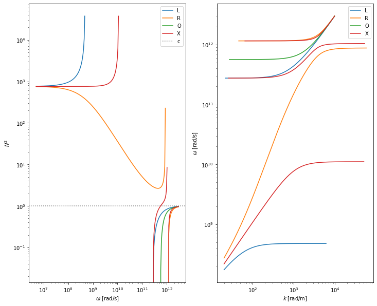
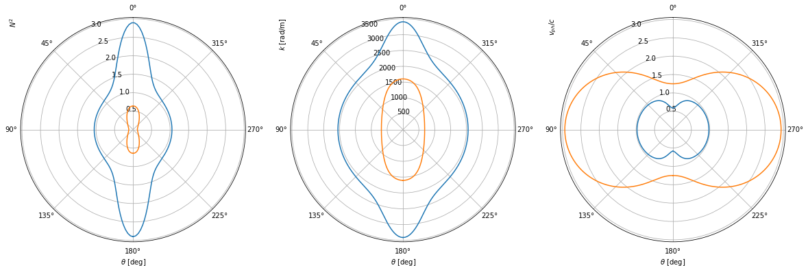

Draw Dispersion Relation¶
[7]:
from sympy import sqrt, pi
from scipy.constants import e, m_p, m_e, c; m_i_N, m_e_N = m_p, m_e
import sinupy.mediums.plasma as pms
import matplotlib.pyplot as plt
from sympy import init_printing; init_printing()
from sinupy.draw import draw_discontinuable_expr, add_line_with_slope
import sinupy.algebra.utility as fualguti
[8]:
# from IPython.core.interactiveshell import InteractiveShell
# InteractiveShell.ast_node_interactivity = "all" # display all expression in one cell instead of the last one
[9]:
from sinupy import mediums, waves
from sinupy.waves import EM
plasma = mediums.ColdMagnetizedPlasma(species='e+i')
wave_eq = waves.EM.WaveEq(plasma)
wave = wave_eq.wave
[10]:
omega_ce = pms.omega_ce(plasma=plasma)
omega_pe = pms.omega_pe(plasma=plasma)
# Even if your plasma.species is 'e', the ion-relevant symbols would not interrupt ...
# our calculation procedure, because `expr.subs(a_specific_symbol, a_numeric_value)` ...
# also would not interrupt our procedure (i.e. throw an exception) when it finds there ...
# does not exist such `a_specific_symbol` in the formula.
omega_ci = pms.omega_cj(plasma=plasma, varidx='i')
omega_pi = pms.omega_pj(plasma=plasma, varidx='i')
# Substitute symbol parameters with accurate numerical values.
# Note the function will capture the variables B, n_0, m_i from the working scope.
w2N = lambda expr: expr\
.subs(omega_ce, pms.omega_ce(B=B))\
.subs(omega_pe, pms.omega_pe(n_0=n_0))\
.subs(omega_ci, pms.omega_cj(q_e=1, m=m_i_N, B=B))\
.subs(omega_pi, pms.omega_pj(n_0=n_0, q_e=1, m=m_i_N))
\(N^2(\omega, \theta)\)¶
Express \(N^2\) with \(\omega\), \(\omega_{ce}\), \(\omega_{pe}\) and e.t.c. instead of \(\kappa_\perp\), \(\kappa_\times\), \(\kappa_\parallel\).
\(N = |\vec{k}|/|\vec{k}_0|\), where \(|\vec{k}_0| = \omega / c\) is the wave vector of the electromagnetic wave with \(\omega\) (angular) frequency in vacuum.
[11]:
fig, axs = plt.subplots(1, 2, figsize=(12, 10))
ax = axs[0]
ax.set_xscale('log'); ax.set_yscale('log')
ax.set_xlabel('$\omega$ [rad/s]')
ax.set_ylabel('$N^2$')
ax.tick_params(axis='x', which='minor', bottom=True, labelbottom=True)
ax = axs[1]
ax.set_xscale('log')
ax.set_yscale('log')
ax.set_xlabel('$k$ [rad/m]')
ax.set_ylabel('$\omega$ [rad/s]')
ax.tick_params(axis='x', which='minor', bottom=True, labelbottom=True)
ax.tick_params(axis='y', which='minor', left=True, labelleft=True)
B, n_0 = 5, 1e20
for theta in [0, pi/2]:
N2_in_omega = [
pms.kappa2omega(sol, wave, plasma) for sol in # kappa -> omega.
EM.solve_N2(wave_eq, theta=theta)] # <-- Set theta here
# omega -> accurate numerical values.
N2 = [w2N(sol) for sol in N2_in_omega]
# Now N^2 only depends on wave.w
if theta == 0:
# draw_kwarg['labels'] = [{'label': 'L'}, {'label': 'R'}] # ['L', 'R']
subkwarg = [{'label': 'L'}, {'label': 'R'}] # ['L', 'R']
elif theta == pi/2:
# draw_kwarg['labels'] = ['O', 'X']
subkwarg = [{'label': 'O'}, {'label': 'X'}] # ['L', 'R']
else:
subkwarg = None
ax = axs[0]
draw_discontinuable_expr(
N2, wave.w,
varlim=(0.5e7, 3e12), # limit of wave angular frequency, omega
exprlim=(-0.4, 1e5), # limit of N^2, refraction index
num=250,
var_sample_scale='log', fig=fig, ax=ax, list_subkwarg=subkwarg)
ax = axs[1]
k_in_w = [wave.w / c * sqrt(sol) for sol in N2]
draw_discontinuable_expr(
k_in_w, wave.w,
varlim=(0.5e7, 3e12), # limit of wave angular frequency, omega, rad/s
exprlim=(2e1, 6e4), # limit of wave vector length, k, rad/m
num=int(1e5), var_is_yaxis=True,
var_sample_scale='log', fig=fig, ax=ax, list_subkwarg=subkwarg)
axs[0].axhline(y=0, color='lightgrey', linestyle=':') # N^2 = 1
axs[0].axhline(y=1, color='grey', linestyle=':', label='c') # N^2 = 0
# Add a line corresponding to light in vacuum.
# add_line_with_slope(axs[1], c, num=500, color='grey', linestyle='--', label='c')
[ax.legend() for ax in axs]
<string>:2: RuntimeWarning: invalid value encountered in sqrt
<string>:2: RuntimeWarning: invalid value encountered in sqrt
<string>:2: RuntimeWarning: invalid value encountered in sqrt
<string>:2: RuntimeWarning: invalid value encountered in sqrt
[11]:
[<matplotlib.legend.Legend at 0x7fbca042f490>,
<matplotlib.legend.Legend at 0x7fbca042f1d0>]

[12]:
fig, axs = plt.subplots(1, 3, figsize=(20, 12), subplot_kw={'projection': 'polar'})
for ax in axs:
ax.set_xlabel('$\\theta$ [deg]')
ax.grid(True)
ax.set_theta_zero_location('N')
axs[0].set_ylabel('$N^2$', loc='top')
axs[1].set_ylabel('$k$ [rad/m]', loc='top')
axs[2].set_ylabel('$v_{ph}/c$', loc='top')
B, n_0 = 5, 1e20
theta = EM.theta_btwn_B_and_k(wave_eq)
# Substitute kappa components with omega.
N2_in_omega_theta = [
pms.kappa2omega(sol, wave, plasma) for sol in
EM.solve_N2(wave_eq)]
for omega in [6e11]: # Usually `omega` expresses a fixed parameter, while `w` expresses a variable
N2_in_theta = [w2N(sol.subs(wave.w, omega)) for sol in N2_in_omega_theta]
ax = axs[0]
draw_discontinuable_expr(
N2_in_theta, theta,
varlim=(-3.14159, 3.14159), # limit of theta, from [0, pi]
exprlim=(-0.4, 1e5), # limit of N^2, refraction index
num=250,
var_sample_scale='linear', fig=fig, ax=ax, list_subkwarg=subkwarg)
ax = axs[1]
k_in_theta = [omega / c * sqrt(sol) for sol in N2_in_theta]
draw_discontinuable_expr(
k_in_theta, theta,
varlim=(-float(pi), float(pi)), # limit of theta, from [0, pi]
# exprlim=(0, 6e4), # limit of wave vector length, k, rad/m
num=int(1e5), var_is_yaxis=False,
var_sample_scale='linear', fig=fig, ax=ax, list_subkwarg=subkwarg)
ax = axs[2]
v_ph_ratio_c_in_theta = [1 / sqrt(sol) for sol in N2_in_theta]
draw_discontinuable_expr(
v_ph_ratio_c_in_theta, theta,
varlim=(-float(pi), float(pi)), # limit of theta, from [0, pi]
# exprlim=(0, 6e4), # limit of v_ph, wave phase speed, m/s
num=int(1e5), var_is_yaxis=False,
var_sample_scale='linear', fig=fig, ax=ax, list_subkwarg=subkwarg)
# Add a line corresponding to light in vacuum.
# add_line_with_slope(axs[1], c, num=500, color='grey', linestyle='--', label='c')
# [ax.legend() for ax in axs]

References:¶
For better color impression, matplotlib official color gallery can ben refered.